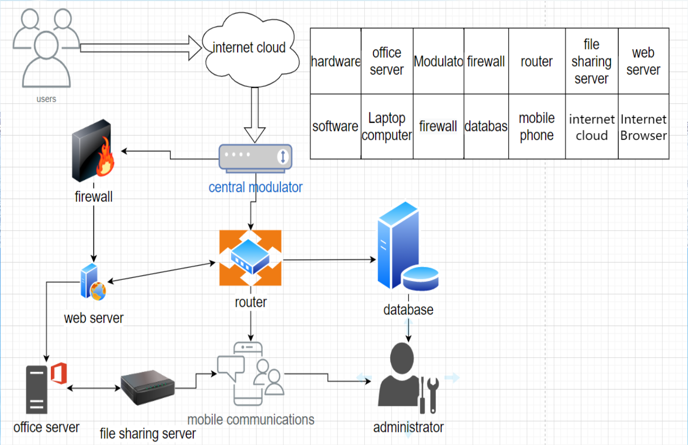

creating your own website
Values：Building your own website will make it easier for you to do a lot of things like design and production online. A personal website makes more sense as an online custom resume. Building your own website will give you endless design choices and will increase your credibility and visibility for yourself and the things you associate with yourself.
methodology:Choose suitable for your site construction, planning and structure of the site is clear. Collate and analyze requirements, cost, etc. Select a unique and relevant domain name. Design web pages for the website. Upload your own content and implement the content of the website. Preview and test your site, and optimize it.
required hardware：Router，WebServer，File Server.Construct terminology and network structure to support network construction and operation.
required software：firewall，Database.Firewalls protect websites from viruses, and databases are used to store collected data, organize and upload data files to servers.
| hardware | detail | description | software | detail | description |
| Router | The leading WIFI6 router MX8400 | MX8400 WiFi6 distributed router as a high-end model, high hardware configuration, specifications in line with 802.11ax standard, two MX4200 iMesh networking, the highest transmission rate can reach AX4200Mbps, support MU-MIMO multi-device concurrency and triple frequency technology. USB3.0 external memory performs surprisingly fast reads and writes. | firewall | Microsoft Defender | Microsoft Defender is a cross-device security application that helps individuals and family members protect their data and devices, and stay safe online with malware protection, real-time security notifications, and security tips. |
| WebServer | Network Policy Server (NPS) | NPS Cmdlets in Windows PowerShell for Windows Server 2012 and Windows 8. Network Policy Server (NPS) allows you to create and enforce organization-wide network access policies for connection request authentication and authorization. | Database | Microsoft SQL server | Microsoft SQL Server is a comprehensive database platform that provides enterprise-class data management using integrated business intelligence (BI) tools. The Microsoft SQL Server database engine provides more secure and reliable storage for relational and structured data, enabling you to build and manage highly available and high-performance data applications for your business. |
| File Server | HPE ProLiant DL360 Gen10 Plus server | The HPE ProLiant DL360 Gen10 Plus server is a compact 1U server that delivers outstanding performance while striking the right balance between scalability and density for a variety of workloads and environments. The HPE ProLiant DL360 Gen10 Plus server enjoys a full warranty service and is designed to provide versatility and great recovery capability | Laptop Computer | MacBook Pro | Each display is rigorously calibrated at the factory and has different professional reference modes for HDR palette, photography, design and print presets. ProMotion techniques. ProMotion Adaptive Refresh Rate technology debuts on the Mac. Now, every action on your screen, whether it's scrolling through a Web page or playing a game, feels super smooth, super responsive, and uses less power. The adaptive technology automatically adjusts the refresh rate, up to 120Hz, depending on how fast the content on the screen is moving. Video editors can also choose a fixed refresh rate based on the frame rate of the footage. Display housing. |
| Ye Zhouyi | Jesse | |
|---|---|---|
| Name of your first friend | Chen Weihao | watermelon |
| Name of your second friend | Fang Jingbin | courtier |
| Name this system? | Personal or small office network system | Office record system |
| What are the system objectives? | Promote personal or small office management, improve office efficiency | Promote office management of small companies, improve business efficiency, and promote office network construction |
| List 3 essential system features and components? | features:1.Provide orderly office communication;2.For your small, quick office needs；3.Improve accessibility of small offices. components:1.Internet Cloud；2.Web server；3.router. | features:1.Keep office files encrypted；2.For your small, quick office needs；3.Simplify office equipment and improve efficiency. components:1.Internet Cloud；2.modulator；3.router. |
| List 3 essential hardware from this system | 1.router； 2.modulator； 3.Web server. | 1.router； 2.modulator； 3.Web server. |
| List 3 essential software from this system | 1.Laptop； 2.firewall； 3.database. | 1.mobile phone； 2.firewall； 3.database. |
| List 2 external system components | 1.Internet；2.client. | 1.users；2.Enterprise staff. |
| List 2 system benefits | 1.Simplify equipment, fast；2.Share file data to improve work efficiency. | 1.Convenient management；2.Simplify equipment, fast. |
| List 2 project difficulties | Easy to be invaded, network security is not high. | It needs to be updated all the time. |
